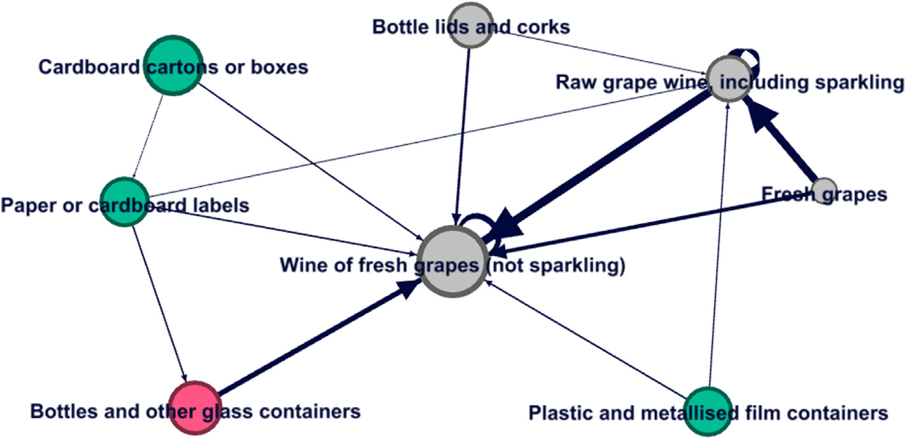

Sustainability transitions in mining: forces of lock in and change
con Anabel Marín
El artículo desarrolla un marco para caracterizar el régimen socio-técnico de la minería, analizando las fuerzas de bloqueo (lock-in) y de transformación. Conecta los estudios de transiciones con perspectivas del desarrollo relevantes para economías dependientes de recursos naturales que enfrentan la transición energética, la digitalización y una demanda de minerales impulsada por la defensa.
A critical application of Mission-Oriented Policies at the subnational level in Latin America: the case of the Valparaíso Region, Chile
con Diego Cabello Moya
Este artículo examina la aplicabilidad y las limitaciones de los marcos de Política de Innovación Orientada por Misiones (MOIP) a nivel subnacional, a partir del caso de la Región de Valparaíso, Chile.
Measuring Industrial Policy Mixes
Los avances recientes en datos comparados sobre política industrial abren nuevas oportunidades para la investigación comparativa. Este artículo evalúa la cobertura y comparabilidad de las principales bases de datos y propone un vector de combinación de políticas industriales (policy mix) medible y robusto.
La especialización en sectores creativos se asocia a mayores ventas y más empresas dentro del mismo sector (efectos “marshallianos”), pero no se encuentran externalidades hacia otros sectores (efectos “jacobianos”) — evidencia para Chile que sugiere cautela en las prescripciones de política para las industrias creativas.
›Resumen completo
Este artículo analiza externalidades de localización marshallianas y jacobianas en las industrias creativas usando un panel de comunas chilenas. Aprovechamos la variación en la especialización en industrias creativas entre comunas para identificar el efecto causal sobre las ventas y la entrada de empresas en el mismo sector (marshalliano) y en otros sectores (jacobiano). Si bien la especialización en industrias creativas aumenta los resultados del propio sector, no encontramos evidencia de externalidades hacia otros sectores, lo que llama a la cautela frente a políticas que justifican el apoyo a las industrias creativas sobre la base de amplios efectos de derrame en la economía.
Una campaña de información de seguridad cerca de un centro comercial en Santiago redujo el temor general al delito y la victimización efectiva de los trabajadores, pero aumentó el temor entre quienes fueron abordados directamente por las autoridades — lo que resalta la importancia de cómo se focalizan y entregan los mensajes de prevención del delito.
›Resumen completo
Estudiamos un programa piloto en Santiago de Chile, en el que carabineros y funcionarios de gobierno repartieron folletos de seguridad cerca de un centro comercial. Usando una estrategia de diferencias en diferencias que compara a trabajadores cercanos al centro comercial con otros más alejados, encontramos que el programa redujo el temor general al delito y la victimización efectiva entre los trabajadores de la zona tratada. Paradójicamente, entre las personas que fueron abordadas directamente y recibieron un folleto, el temor al delito medido aumentó. Estos efectos opuestos resaltan la complejidad de la comunicación en prevención del delito y la importancia de la focalización en las políticas de seguridad pública.
2022Technological Forecasting & Social Change, 174
Las barreras de demanda y financieras son los principales obstáculos a la innovación entre las empresas chilenas y tienden a pesar más que otras restricciones cuando están presentes. Otras barreras varían según el sector: las restricciones de conocimiento afectan a la manufactura, y la estructura de mercado y la regulación afectan a los servicios — lo que resalta la necesidad de políticas de innovación específicas por sector.
›Resumen completo
Estudiamos los efectos de distintos tipos de obstáculos a la innovación sobre la probabilidad de obtener distintos resultados de innovación a nivel de empresa. Consideramos obstáculos financieros, de conocimiento, de cooperación, regulatorios y de demanda, que separamos en dos categorías: estructura de mercado, y falta o incertidumbre sobre la demanda. Usando una muestra combinada de cuatro encuestas de innovación chilenas y un enfoque de variables instrumentales novedoso para esta literatura para abordar la endogeneidad, encontramos que solo las barreras de demanda y financieras parecen tener un efecto negativo sobre la probabilidad de generar innovaciones. Cuando las barreras financieras o de demanda están presentes, parecen ser vinculantes y prevalecen sobre todos los demás obstáculos; cuando están ausentes, otras barreras se vuelven significativas. Aportamos evidencia de efectos heterogéneos entre sectores, considerando no solo manufactura y servicios sino también actividades primarias, una comparación no realizada previamente y relevante para las economías en desarrollo. Mostramos que los obstáculos de conocimiento son relevantes para la manufactura y que los obstáculos de estructura de mercado y regulatorios lo son en el sector servicios, mientras que los de demanda y financieros parecen importar en todos los sectores. La omnipresencia de los obstáculos financieros y de demanda, su relación con las demás barreras y las diferencias sectoriales observadas tienen implicancias importantes de política.
2021Environmental Innovation and Societal Transitions, 41
La transición energética aumenta drásticamente la demanda de minerales, generando oportunidades económicas para los países ricos en recursos y, al mismo tiempo, amplificando los conflictos sociales y ambientales — un punto ciego en la investigación sobre transiciones de sostenibilidad.
›Resumen completo
La transición energética global requiere enormes cantidades de minerales, incluidos cobre, litio, cobalto y tierras raras. Esto genera oportunidades económicas significativas para los países en desarrollo ricos en recursos, pero también intensifica los conflictos sociales y ambientales asociados a la expansión minera. Sostenemos que la investigación sobre transiciones ha pasado por alto en gran medida este “lado oscuro”, centrándose en descarbonizar los sistemas de energía y descuidando los costos sociales y ambientales incorporados en las cadenas de suministro que hacen posibles esas transiciones. Desarrollamos un marco conceptual que integra las perspectivas del desarrollo y de las transiciones, y recurrimos a evidencia de América Latina para ilustrar las tensiones y disyuntivas involucradas.
La competencia de las importaciones se transmite a través de las cadenas de suministro: cuando cae la demanda de un producto, las plantas nacionales multiproducto abandonan las variedades que proveen como insumos — especialmente las plantas pequeñas y de baja productividad con líneas de bajo margen.
›Resumen completo
Estudiamos cómo la competencia de las importaciones chinas afecta el rango de productos (product scope) de las plantas nacionales multiproducto, con foco en el canal de la cadena de suministro. Usando datos chilenos de planta-producto vinculados a matrices insumo-producto, mostramos que una caída en la demanda de un bien final reduce la variedad de insumos que las plantas nacionales producen para abastecer a ese sector. El efecto se concentra en plantas pequeñas, de baja productividad y con productos de bajo margen, consistente con que las empresas abandonan primero sus líneas de producto menos competitivas. Esta transmisión en red de la competencia representa un margen de ajuste adicional a menudo ignorado en la literatura de comercio y empleo.

2020International Review of Economics and Finance, 70
Un tipo de cambio más depreciado se asocia a una mayor variedad de exportaciones, mientras que una mayor volatilidad cambiaria reduce la variedad exportada, en particular para bienes intensivos en tecnología — lo que sugiere que las condiciones cambiarias pueden moldear la estructura exportadora y la ventaja comparativa de los países en el largo plazo.
›Resumen completo
Examinamos cómo el nivel y la volatilidad del tipo de cambio real afectan la variedad exportada en un amplio panel de países durante tres décadas. Usando estimadores heterogéneos de panel largo que permiten dependencia de corte transversal y heterogeneidad de pendientes, encontramos que un tipo de cambio más depreciado se asocia a una mayor variedad exportada, mientras que una mayor volatilidad la reduce. Estos efectos son heterogéneos entre categorías de productos, siendo particularmente pronunciados para los bienes intensivos en tecnología. Los resultados sugieren que la política cambiaria puede moldear el margen extensivo de las exportaciones y, a su vez, la estructura de la ventaja comparativa en el largo plazo.
Los nuevos productos de exportación tienen más probabilidades de sobrevivir cuando están estrechamente relacionados con las capacidades existentes de la empresa, especialmente durante el primer año — lo que sugiere que el conocimiento y la experiencia acumulados condicionan la diversificación exportadora y deberían considerarse en la política comercial e industrial.
›Resumen completo
Estudiamos la supervivencia de nuevos productos de exportación usando un panel de exportadores chilenos multiproducto. Aprovechando la variación intra-empresa en la distancia de los nuevos productos de exportación respecto de la canasta de competencias existente de la empresa, mostramos que las exportaciones más cercanas a las competencias centrales de la empresa sobreviven significativamente más tiempo. El efecto se concentra en el primer año de exportación y es robusto al controlar por efectos fijos de empresa, producto y destino. Los resultados sugieren que la diversificación exportadora está condicionada por las capacidades organizacionales, con implicancias para la política comercial e industrial.
Política de CTI para el desarrollo: Institucionalidad y descentralización. With J.M. Ahumada, C. Contreras. In: Economía, ecología y democracia. Catalonia.